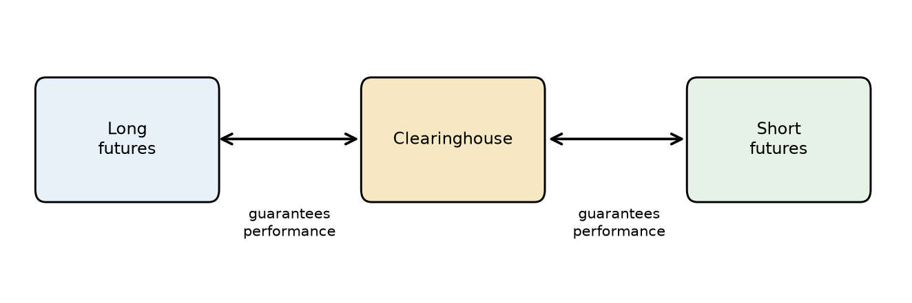
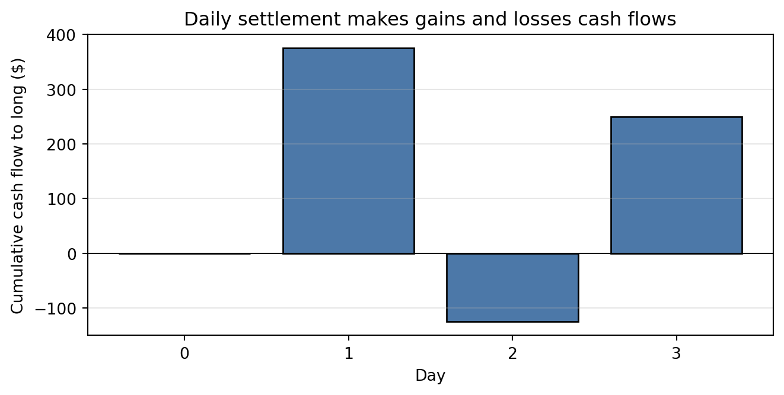
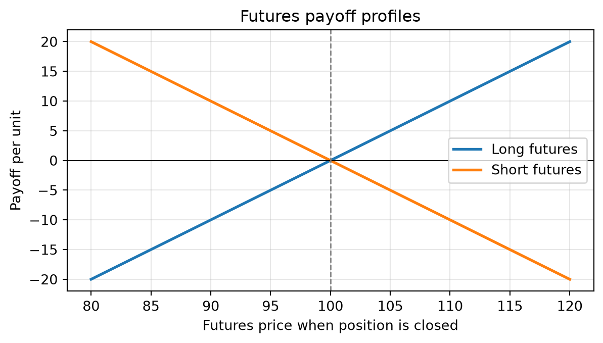
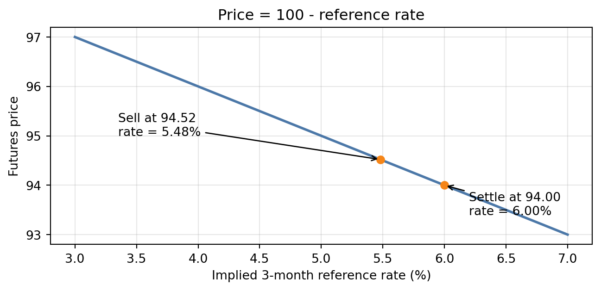
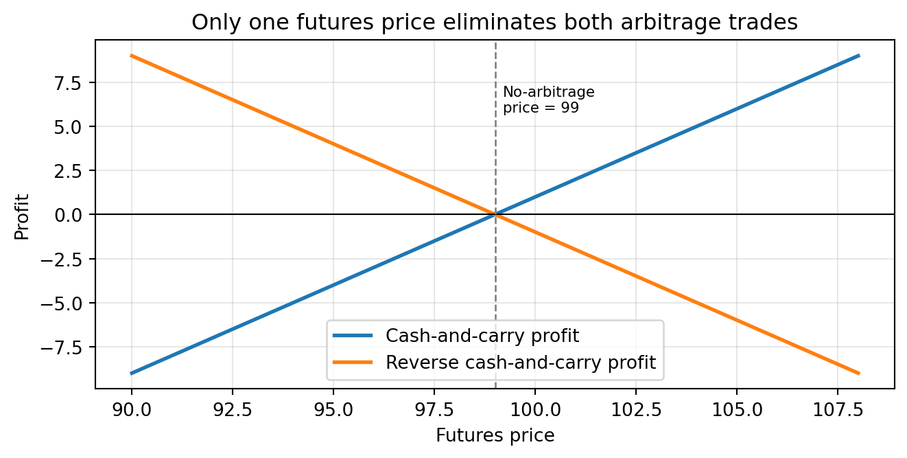
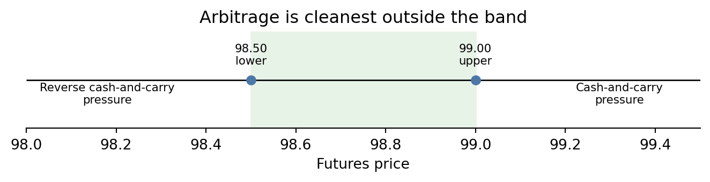
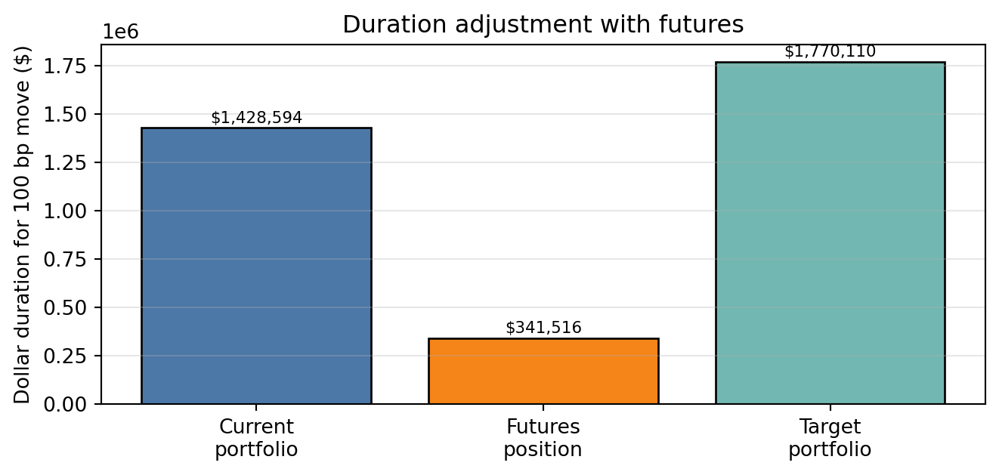
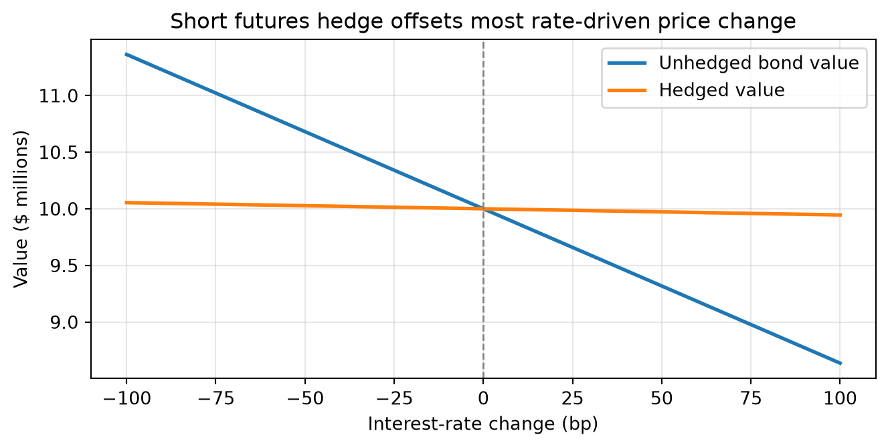
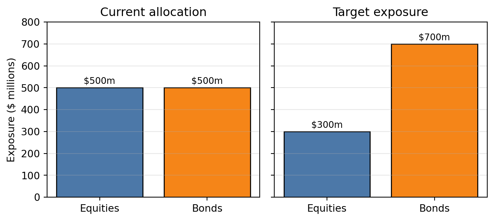

Lecture 9: Interest-Rate Futures Contracts
Learning Objectives
After completing this lecture you should be able to:
- Define a futures contract and explain the role of the exchange clearinghouse.
- Distinguish long and short futures positions and explain how positions are liquidated.
- Explain initial margin, maintenance margin, variation margin, and daily marking to market.
- Compare futures contracts with forward contracts.
- Describe the risk and return profile of long and short futures positions.
- Explain the historical role of Eurodollar futures and why SOFR futures are now the main USD short-term-rate futures.
- Describe the basic features of SOFR futures, Fed Funds futures, Treasury bond futures, ultra Treasury bond futures, and Treasury note futures.
- Define conversion factors, invoice price, delivery options, and the cheapest-to-deliver issue.
- Derive the no-arbitrage theoretical futures price using cash-and-carry logic.
- Explain why Treasury futures prices are affected by delivery options.
- Use futures contracts to adjust duration, hedge bond positions, create synthetic securities, and shift asset allocation.
- Calculate a hedge ratio and the number of Treasury futures contracts needed for a hedge.
1 Mechanics of Futures Trading
A futures contract is an agreement between a buyer or seller and an organized exchange, through its clearinghouse, to buy or sell an underlying asset at a specified future date for a predetermined price. The predetermined price is the futures price. The future date is the settlement date or delivery date.
Interest-rate futures are derivative contracts because their values are derived from interest rates or fixed-income securities. They allow portfolio managers to alter interest-rate exposure quickly, often without buying or selling the underlying cash bonds.
Most financial futures settle in March, June, September, or December. The contract closest to settlement is called the nearby futures contract. Contracts with later settlement dates are farther out on the futures curve.
TipCore Intuition
A futures contract separates price exposure from ownership of the underlying asset. A manager can add or remove interest-rate exposure through the futures market without immediately trading the cash bond portfolio.
Opening Position
An investor who buys a futures contract is long futures. An investor who sells a futures contract is short futures.
- A long futures position benefits when the futures price rises.
- A short futures position benefits when the futures price falls.
For bond futures, the economic intuition is tied to interest rates. Bond prices usually rise when interest rates fall, so a long Treasury futures position generally benefits from falling rates. A short Treasury futures position generally benefits from rising rates.
Notional Value and How the Contract Works
The notional value of a futures contract is the amount of underlying exposure controlled by one contract. It is not the amount of cash paid upfront. It is the scale used to translate a price change into a dollar gain or loss.
For example, a Treasury futures contract with $100,000 par value gives price exposure to $100,000 of Treasury securities. A short-rate futures contract may be quoted as an index, but its tick value is still tied to a notional interest-rate exposure. In a Three-Month SOFR futures contract, a 1-basis-point move is worth about $25 because the contract is economically linked to a three-month interest period on $1 million:
\[ 1{,}000{,}000 \times 0.0001 \times \frac{90}{360}=25. \]
This is why futures are leveraged instruments. A trader does not post $1 million to trade one SOFR futures contract. The trader posts margin, but daily gains and losses are calculated from the notional exposure.
The daily workflow is:
- A trader opens a long or short futures position.
- The exchange sets a daily settlement price.
- The position is marked to market using the change in settlement price.
- Gains are credited to the margin account and losses are debited.
- If the margin account falls below the maintenance margin, the trader must post variation margin.
TipNotional Value Is Exposure, Not Cost
Do not confuse notional value with the amount invested. Futures require margin, not full payment for the underlying exposure. The notional value tells us how sensitive the position is to price or rate changes.
Liquidating a Position
A futures position can be liquidated in two ways.
First, the trader can enter an offsetting trade before settlement. A long position is closed by selling the same futures contract. A short position is closed by buying the same futures contract.
Second, the trader can hold the position to settlement. Physical-delivery contracts require delivery or receipt of an acceptable underlying security. Cash-settlement contracts settle by a cash payment based on the final reference price or rate.
Most financial futures positions are closed before delivery. The futures market is therefore mainly used for price exposure and hedging, not for routine physical delivery.
Role of the Clearinghouse
The clearinghouse interposes itself between every buyer and seller. It becomes the buyer to every seller and the seller to every buyer. This structure has two important effects:
- it reduces counterparty risk because the clearinghouse guarantees performance;
- it makes offsetting trades simple because traders do not need to negotiate with the original counterparty.
Without a clearinghouse, each party would have to worry about whether the other party could perform at settlement. With a clearinghouse, the trader’s direct exposure is to the clearinghouse and its margining system.
Margin Requirements
Futures contracts use margin to manage credit risk. The margin account is not a loan used to buy the underlying asset. It is performance collateral.
The initial margin is the amount deposited when a position is opened. The maintenance margin is the minimum equity level allowed before additional funds are required. If losses reduce the margin account below the maintenance level, the trader must deposit variation margin to restore the account.
Futures positions are marked to market daily. Gains are credited and losses are debited based on the daily settlement price.
NoteMargin Versus Securities Margin
In a stock or bond margin account, margin often means borrowing part of the purchase price. In a futures account, margin is mainly good-faith collateral. The full notional value of the contract is not paid upfront.
NoteExample 1: Daily Marking to Market
Suppose a trader buys one Treasury futures contract at 100-00. The contract size is $100,000, and one full point is worth $1,000. The daily settlement prices are:
| Day | Settlement price | Daily price change | Cash flow to long |
|---|---|---|---|
| 0 | 100-00 | – | – |
| 1 | 100-12 | +12/32 | +$375.00 |
| 2 | 99-28 | -16/32 | -$500.00 |
| 3 | 100-08 | +12/32 | +$375.00 |
The cumulative mark-to-market cash flow is:
\[ 375 - 500 + 375 = 250. \]
The long has gained $250 because the contract rose from 100-00 to 100-08. Daily settlement changes the timing of cash flows, but the total gain over the period still reflects the change in futures price.

2 Futures Versus Forward Contracts
A forward contract is also an agreement for future delivery at a specified price. The key differences are institutional.
| Feature | Futures contract | Forward contract |
|---|---|---|
| Trading venue | Organized exchange | Over-the-counter |
| Terms | Standardized | Negotiated |
| Counterparty risk | Reduced by clearinghouse | Direct counterparty exposure |
| Marking to market | Daily | Depends on contract terms |
| Liquidity | Often active secondary market | Often limited secondary market |
| Settlement intent | Usually offset before delivery | Often intended for delivery |
The clearinghouse is the central distinction. Futures contracts are standardized and supported by daily margining. Forward contracts are customized and expose each party to the possibility that the counterparty fails to perform.
3 Risk and Return Characteristics of Futures Contracts
The payoff of a futures contract is symmetric between the long and short positions. If the futures price rises after the trade:
- the long position gains;
- the short position loses.
If the futures price falls:
- the long position loses;
- the short position gains.
For a contract entered at futures price \(F_0\) and closed at futures price \(F_1\), the payoff per unit of underlying is:
\[ \left(F_1-F_0\right) \]
for the long position, and
\[ -\left(F_1-F_0\right) \]
for the short position.

Leveraging Aspect of Futures
Futures create large notional exposure with a relatively small initial margin deposit. This creates leverage.
For example, if the underlying exposure is $100,000 and the initial margin is $5,000, a trader controls $100,000 of exposure with $5,000 of posted collateral. A small percentage move in the underlying can therefore produce a large percentage gain or loss relative to margin.
Leverage is useful for hedging because it allows large exposures to be managed efficiently. The same leverage also makes futures risky when used for speculation.
4 Interest-Rate Futures Contracts
Interest-rate futures include contracts based on short-term reference rates and contracts based on Treasury securities. The major categories are:
- short-term interest-rate futures, such as SOFR and Fed Funds futures;
- Treasury note futures;
- Treasury bond futures;
- ultra Treasury bond futures.
Each contract has detailed specifications: deliverable grades, quotation convention, tick size, contract months, last trading day, last delivery day, and settlement method.
Eurodollar Futures and the LIBOR Transition
A Eurodollar time deposit is a U.S. dollar-denominated deposit issued outside the United States. Traditional Eurodollar futures were based on 3-month U.S. dollar LIBOR on a notional principal of $1 million.
The contract is quoted as an index:
\[ \text{Eurodollar futures price} = 100 - \text{annualized 3-month LIBOR} \]
If the futures price is 94.52, the implied 3-month LIBOR is:
\[ 100 - 94.52 = 5.48\%. \]
A one-tick change is 0.01 in the index price, equal to 1 basis point in the implied rate. For a $1 million notional and a 90-day quarter:
\[ 1{,}000{,}000 \times 0.0001 \times \frac{90}{360} = 25. \]
So one tick is worth $25. Because the underlying is an interest rate rather than a deliverable asset, the contract is cash-settled.
WarningMarket Practice Update: Eurodollar Futures Are Historical
Eurodollar futures are important for understanding the history of short-term interest-rate futures, but they are no longer the main live USD short-rate futures contract. The reason is the end of LIBOR. U.S. dollar LIBOR publication ceased for new market use, and the market moved to SOFR-based contracts.
For current USD short-term-rate hedging, students should think first about SOFR futures and Fed Funds futures, not Eurodollar futures. Eurodollar examples remain useful because the index-price convention, tick-value logic, and long/short rate exposure carry over directly to modern short-rate futures.
NoteHedging Borrowing Costs
A borrower worried that short-term rates will rise can short short-term interest-rate futures. If rates rise, the futures index falls, and the short futures position gains. That gain can offset higher borrowing costs.
NoteExample 2: Eurodollar Futures Gain or Loss
Suppose a trader sells one Eurodollar futures contract at 94.52. The implied 3-month LIBOR is 5.48 percent. At settlement, the contract settles at 94.00, so the final implied rate is 6.00 percent.
The short sold at 94.52 and effectively buys back at 94.00:
\[ 94.52 - 94.00 = 0.52. \]
Because 0.52 equals 52 ticks and each tick is $25:
\[ 52 \times 25 = 1{,}300. \]
The short gains $1,300. This is why a borrower worried about rising short-term rates can short an index-quoted short-rate futures contract.

SOFR Futures
SOFR is the Secured Overnight Financing Rate. It measures the cost of overnight borrowing collateralized by U.S. Treasury securities. Modern U.S. dollar short-rate futures primarily reference SOFR rather than LIBOR.
CME lists both One-Month SOFR futures and Three-Month SOFR futures. Both are cash-settled and use the same index-price idea:
\[ \text{SOFR futures price} = 100 - \text{implied SOFR rate}. \]
- One-Month SOFR futures are based on the arithmetic average of daily SOFR values during the contract delivery month.
- Three-Month SOFR futures are based on business-day compounded SOFR during the contract reference quarter.
CME’s Three-Month SOFR contract unit is:
\[ 2{,}500 \times \text{contract-grade IMM Index}. \]
The contract-grade IMM Index is the final SOFR futures index for the contract. Like the quoted futures price, it is expressed as an index near 100:
\[ \text{contract-grade IMM Index} = 100 - \text{contract-grade three-month SOFR rate}. \]
Multiplying the index by 2,500 converts the index level into the dollar value used for settlement. For example, if the final index is 95.00, the contract’s final settlement value is:
\[ 2{,}500 \times 95.00 = 237{,}500. \]
A one-index-point change is therefore worth $2,500. Because one index point equals 100 basis points, one basis point is worth:
\[ \frac{2{,}500}{100}=25. \]
The economic notional is tied to a three-month interest period on $1 million:
\[ 1{,}000{,}000 \times 0.0001 \times \frac{90}{360}=25. \]
This gives the same result from the interest-rate side. A basis point is \(0.0001\), and a three-month contract uses the money-market year fraction \(90/360=0.25\). The dollar interest change on $1 million for a one-basis-point move over one quarter is therefore $25.
Thus, a 1-basis-point change in the implied rate corresponds to about $25 per contract. Since the price is \(100 - \text{rate}\), a higher SOFR futures price means a lower implied SOFR rate. The sign matters: if the quoted futures price rises by 1 basis point, the implied rate falls by 1 basis point and a long position gains about $25; if the quoted futures price falls by 1 basis point, the long loses about $25.
NoteExample 3: SOFR Futures Daily Price Change
Suppose a trader buys one Three-Month SOFR futures contract at 95.20. The implied compounded SOFR rate is:
\[ 100 - 95.20 = 4.80\%. \]
At the end of the day, the settlement price rises to 95.24. The implied rate has fallen to:
\[ 100 - 95.24 = 4.76\%. \]
The price increased by 0.04, or 4 basis points. With a $25 value per basis point:
\[ 4 \times 25 = 100. \]
The long futures position receives $100 through daily mark-to-market.
Fed Funds Futures
Fed Funds futures reference the effective federal funds rate, the unsecured overnight rate at which depository institutions lend reserve balances to each other. These contracts are heavily used to infer market expectations for Federal Reserve policy.
The 30-Day Fed Funds futures price is also an index:
\[ \text{Fed Funds futures price} = 100 - \text{average effective federal funds rate for the contract month}. \]
If the contract price is 95.625, the market-implied average effective federal funds rate for that month is:
\[ 100 - 95.625 = 4.375\%. \]
The key distinction from SOFR is the underlying rate:
- SOFR is secured by Treasury collateral.
- Fed Funds is an unsecured overnight bank funding rate.
- SOFR futures are commonly used for broad short-rate and derivatives hedging.
- Fed Funds futures are especially useful for expressing views on FOMC policy decisions.
Treasury Futures
Treasury futures are among the most important bond derivatives. They are classified by the maturity range of the deliverable Treasury securities.
Unlike short-term rate futures, Treasury futures are generally physical-delivery contracts. The short position can choose from a set of eligible Treasury securities. Because the deliverable set contains multiple bonds, delivery rules are central to pricing.
NoteReminder: Bond Price Quotes
Treasury bond and note futures use bond-style price quotes. A quote such as 97-16 means:
\[ 97 + \frac{16}{32} = 97.50. \]
This is 97.50 percent of par, not $97.50. For a $100,000 contract, 97-16 corresponds to:
\[ 0.9750 \times 100{,}000 = 97{,}500. \]
One 32nd on a $100,000 Treasury futures contract is:
\[ \frac{1}{32}\% \times 100{,}000 = 31.25. \]
Treasury Bond Futures
The underlying instrument for the Treasury bond futures contract is $100,000 par value of a hypothetical 20-year 6 percent coupon Treasury bond. Prices are quoted as a percent of par in 32nds.
A quote of 97-16 means:
\[ 97 + \frac{16}{32} = 97.50. \]
For a $100,000 contract, this corresponds to:
\[ 0.9750 \times 100{,}000 = 97{,}500. \]
The minimum price fluctuation is 1/32 of 1 percent of par:
\[ \frac{1}{32}\% \times 100{,}000 = 31.25. \]
Because the hypothetical 6 percent bond may not exist, the exchange defines a set of acceptable deliverable Treasury bonds. The short chooses which eligible bond to deliver.
To make delivery comparable across bonds with different coupons and maturities, the exchange assigns each deliverable bond a conversion factor. The invoice price paid by the long is:
\[ \text{Invoice price} = \text{contract size} \times \text{futures settlement price} \times \text{conversion factor} + \text{accrued interest}. \]
For example, if the futures settlement price is 94-08, then the decimal price is 94.25 percent of par. With a conversion factor of 1.20:
\[ 100{,}000 \times 0.9425 \times 1.20 = 113{,}100, \]
before accrued interest.
The cheapest-to-deliver (CTD) issue is the eligible bond that is most economical for the short to deliver. Market participants often identify it by computing the implied repo rate for each eligible issue. The bond with the highest implied repo rate is the CTD issue.
A repo rate is the interest rate on a repurchase agreement. In a repo, a trader sells a security today and agrees to buy it back later at a higher price. Economically, this is a collateralized loan: the security is the collateral, and the difference between the sale price and repurchase price is the interest cost.
The implied repo rate applies the same idea to a futures delivery strategy. It asks: if a trader buys an eligible bond today, finances it, and later delivers it into the futures contract, what financing rate would make the trade break even? In simplified form:
\[ \text{implied repo rate} \approx \frac{\text{invoice price} - \text{cash price of bond}}{\text{cash price of bond}} \times \frac{360}{\text{days to delivery}}. \]
A higher implied repo rate means the delivery strategy earns a better financing return, so that bond is more attractive for the short to deliver.
The CTD issue can also be introduced through delivery cost. Ignoring financing and accrued interest for the moment, the net delivery cost is:
\[ \text{Net delivery cost} = \text{cash price of bond} - (\text{futures price} \times \text{conversion factor}). \]
The lower the net delivery cost, the more attractive the bond is for delivery.
NoteExample 4: Identifying the Cheapest-to-Deliver Bond
Assume the futures settlement price is 94.00. Three deliverable bonds have the following prices and conversion factors:
| Bond | Cash price | Conversion factor | Invoice amount before accrued interest | Net delivery cost |
|---|---|---|---|---|
| A | 103.20 | 1.0800 | 101.52 | 1.68 |
| B | 98.40 | 1.0300 | 96.82 | 1.58 |
| C | 91.10 | 0.9550 | 89.77 | 1.33 |
Bond C is cheapest to deliver because it has the lowest net delivery cost. In practice, traders use a full implied repo calculation that includes accrued interest, financing, and delivery timing, but the intuition is the same: the short delivers the bond that is most favorable to deliver.
Treasury futures give the short three important delivery options:
- Quality or swap option: choice of which acceptable Treasury issue to deliver.
- Timing option: choice of when during the delivery month to deliver.
- Wild card option: ability to give delivery notice after the futures settlement price has been fixed for the day.
These options belong to the short position and reduce the value of the futures contract to the long.
Ultra Treasury Bond Futures
The ultra Treasury bond futures contract is designed for longer-maturity interest-rate exposure. Its deliverable bonds must have at least 25 years to maturity.
This separates very long-end exposure from the regular Treasury bond futures contract. The ultra contract is therefore more useful for managing portfolios with long duration or liabilities that are sensitive to long-term rates.
Treasury Note Futures
Treasury note futures are modeled after Treasury bond futures but have shorter deliverable maturity ranges. The main contracts are:
- 10-year Treasury note futures;
- 5-year Treasury note futures;
- 2-year Treasury note futures.
The 10-year Treasury note futures contract is based on $100,000 par value of a hypothetical 10-year 6 percent Treasury note. Eligible deliverables generally have remaining maturities between 6.5 and 10 years from the first day of the delivery month.
The 5-year contract uses $100,000 par value of eligible Treasury notes with remaining maturity in the 5-year sector. The 2-year contract uses $200,000 par value of eligible Treasury notes with remaining maturity in the 2-year sector.
5 Pricing and Arbitrage in the Interest-Rate Futures Market
Futures pricing is based on the law of one price: two strategies that create the same future cash flows should have the same current value. If they do not, arbitrage trades should push prices back toward fair value.
For bond futures, the basic arbitrage logic compares:
- buying the cash bond and financing it until delivery;
- taking the futures position that delivers or receives the bond at settlement.
Pricing of Futures Contracts
If the futures price is too high relative to the cash bond and financing cost, an arbitrageur can use a cash-and-carry trade:
- buy the cash bond;
- finance the bond purchase by borrowing;
- sell the futures contract.
This trade locks in the high futures delivery price while carrying the bond until settlement.
If the futures price is too low relative to the cash bond and financing cost, an arbitrageur can use a reverse cash-and-carry trade:
- buy the futures contract;
- short the cash bond;
- invest the short-sale proceeds.
This trade locks in the low futures purchase price while synthetically carrying a short cash-bond position until settlement.
NoteExample 5: When the Futures Price Is Too High
Use the same bond:
- cash price = 100;
- annual coupon rate = 12 percent;
- financing rate = 8 percent;
- time to delivery = 0.25 years.
If the futures price is 107, the futures contract is too expensive relative to the cash bond. The arbitrageur can buy the bond for 100, finance the purchase by borrowing 100, and sell the futures contract at 107.
The trade has no initial net investment because the bond purchase is fully financed. Over the three-month holding period, the bond earns accrued coupon interest of:
\[ 100 \times 0.12 \times 0.25 = 3. \]
The borrowing cost is:
\[ 100 \times 0.08 \times 0.25 = 2. \]
At delivery, the arbitrageur receives 107 from the futures delivery and 3 of accrued coupon interest, for total proceeds of 110. The loan repayment is 100 of principal plus 2 of interest, for total cost of 102. The arbitrage profit is:
\[ 110 - 102 = 8. \]
The high futures price creates a profit for buying the cash bond, financing it, and selling the futures.
NoteExample 6: When the Futures Price Is Too Low
If the futures price is 92, the futures contract is too cheap relative to the cash bond. The arbitrageur can short the bond, invest the short-sale proceeds, and buy the futures contract at 92.
The short sale generates 100 of cash, which is invested for three months at 8 percent. The investment earns:
\[ 100 \times 0.08 \times 0.25 = 2. \]
At delivery, the investment is worth 102. The arbitrageur uses the long futures position to buy the bond for 92 and must also pay 3 of accrued coupon interest to close the short bond position. The total cost of acquiring and delivering the bond is therefore:
\[ 92 + 3 = 95. \]
The arbitrage profit is:
\[ 102 - 95 = 7. \]
The low futures price creates a profit for buying the futures and synthetically selling the cash bond.
Theoretical Futures Price Based on Arbitrage Model
Let:
- \(P\) = cash market price of the bond;
- \(F\) = futures price;
- \(r\) = financing rate;
- \(c\) = current yield, measured as annual coupon divided by cash price;
- \(t\) = time to delivery in years.
For a cash-and-carry trade initiated on a coupon date:
\[ \text{Profit} = F + ctP - (P + rtP). \]
No arbitrage requires profit to equal zero:
\[ 0 = F + ctP - (P + rtP). \]
Solving for the theoretical futures price:
\[ F = P[1+t(r-c)]. \]
The term \(r-c\) is the net financing cost, often called the cost of carry.
- If \(c > r\), carry is positive and the futures price tends to be below the cash price.
- If \(c < r\), carry is negative and the futures price tends to be above the cash price.
- If \(c = r\), the theoretical futures price equals the cash price.
For the example above:
\[ F = 100[1 + 0.25(0.08 - 0.12)] = 99. \]
At 99, neither the cash-and-carry nor the reverse cash-and-carry trade produces an arbitrage profit.

Closer Look at the Theoretical Futures Price
The basic formula is useful, but it depends on simplifying assumptions. Actual futures prices can differ from the simple theoretical value because of margin cash flows, unequal borrowing and lending rates, transaction costs, uncertainty about the deliverable bond, and delivery options.
Interim Cash Flows
The simple arbitrage model ignores interim variation margin and coupon payments. A futures contract is marked to market daily, while a forward contract may not be.
If rates rise, the short futures position gains as bond futures prices fall and can reinvest margin inflows at higher rates. If rates fall, the short futures position must fund margin outflows, but financing is available at lower rates. These margin flows help explain why futures and forwards are not always identical.
Coupon payments also matter if they occur before delivery. Their reinvestment rate affects the true carry earned by holding the cash bond.
Short-Term Interest Rate (Financing Rate)
The simple model assumes the borrowing rate and lending rate are equal. In practice, the borrowing rate \(r_B\) is often above the lending rate \(r_L\).
The upper no-arbitrage boundary is based on the borrowing rate:
\[ F_{\text{upper}} = P[1+t(r_B-c)]. \]
The lower no-arbitrage boundary is based on the lending rate:
\[ F_{\text{lower}} = P[1+t(r_L-c)]. \]
Transaction costs widen this no-arbitrage band further.
NoteExample 7: No-Arbitrage Band with Different Borrowing and Lending Rates
Suppose:
- cash price \(P=100\);
- coupon yield \(c=12\%\);
- time to delivery \(t=0.25\);
- borrowing rate \(r_B=8\%\);
- lending rate \(r_L=6\%\).
Then:
\[ F_{\text{upper}} =100[1+0.25(0.08-0.12)] =99.00, \]
and
\[ F_{\text{lower}} =100[1+0.25(0.06-0.12)] =98.50. \]
In this simplified setting, a futures price between 98.50 and 99.00 would not support a clean arbitrage after accounting for the borrowing-lending spread.

Deliverable Bond Is Not Known
Treasury futures allow the short to choose from several eligible deliverable securities. Because the actual deliverable is unknown in advance, the futures price tends to trade in relation to the cheapest-to-deliver issue.
The quality option has value to the short position. Therefore, the theoretical futures price is reduced by the value of that option:
\[ F = P[1+t(r-c)] - \text{value of quality option}. \]
Delivery Date Is Not Known
The short also chooses when during the delivery month to deliver and may have a wild card option after the daily settlement price is fixed. These rights also benefit the short and reduce the futures price:
\[ F = P[1+t(r-c)] - \text{delivery options}. \]
Here, delivery options include the quality option, timing option, and wild card option.
6 Bond Portfolio Management Applications
Interest-rate futures can be used to control portfolio duration, hedge interest-rate exposure, enhance yield when futures are mispriced, and shift asset allocation efficiently.
Controlling the Duration of a Portfolio
Buying interest-rate futures increases a bond portfolio’s dollar duration. Selling interest-rate futures reduces dollar duration.
If a manager expects rates to fall, the manager may increase duration. If a manager expects rates to rise, the manager may reduce duration.
The target number of futures contracts is approximately:
\[ \text{Number of contracts} = \frac{ \text{target portfolio dollar duration} - \text{current portfolio dollar duration} }{ \text{dollar duration of one futures contract} }. \]
A positive value means buy futures. A negative value means sell futures.
NoteDuration Adjustment Example
Suppose a portfolio has market value $48,109,810, current duration 2.97, and target duration 3.68. The current dollar duration for a 100-basis-point rate change is:
\[ 0.0297 \times 48{,}109{,}810 = 1{,}428{,}594. \]
The target dollar duration is:
\[ 0.0368 \times 48{,}109{,}810 = 1{,}770{,}110. \]
The required increase is:
\[ 1{,}770{,}110 - 1{,}428{,}594 = 341{,}516. \]
If one 5-year Treasury note futures contract has dollar duration of $5,022, then:
\[ \frac{341{,}516}{5{,}022} \approx 68. \]
The manager buys about 68 contracts.

Duration matching alone does not eliminate all interest-rate risk. A portfolio and benchmark can have the same duration but different convexity or key rate duration exposures.
NoteHow Do We Measure the Interest-Rate Sensitivity of a Treasury Futures Contract?
A Treasury futures contract does not have coupon payments or principal repayment. Therefore, unlike a bond, it does not have a true Macaulay duration or modified duration. When practitioners refer to the “duration” of a Treasury futures contract, they usually mean its interest-rate sensitivity.
In practice, that sensitivity is measured with DV01, the Dollar Value of One Basis Point. Portfolio managers generally work directly with futures DV01 rather than trying to compute a standalone futures duration.
First, identify the cheapest-to-deliver (CTD) bond. Several Treasury securities are eligible for delivery into a Treasury futures contract. The short seller chooses the bond that minimizes the cost of delivery. Because the futures contract usually behaves like the CTD bond, the futures contract’s interest-rate sensitivity is derived from the CTD bond.
Second, compute the CTD bond’s DV01:
\[ DV01_{CTD} = D_{mod,CTD} \times P_{CTD} \times 0.0001. \]
Here, \(D_{mod,CTD}\) is the modified duration of the CTD bond, \(P_{CTD}\) is the market value of the CTD bond corresponding to the contract’s deliverable face amount, and \(0.0001\) represents a one-basis-point change in yield. Although bond prices decrease when yields increase, DV01 is quoted as a positive risk measure.
Third, convert the CTD DV01 into the futures DV01. The invoice price received by the short is approximately:
\[ \text{Invoice price} = F \times CF + AI, \]
where \(F\) is the futures price, \(CF\) is the conversion factor, and \(AI\) is accrued interest. Ignoring accrued interest and delivery-option details:
\[ P_{CTD} \approx F \times CF. \]
Therefore:
\[ DV01_{futures} \approx \frac{DV01_{CTD}}{CF}. \]
The intuition is scaling. Because the futures price is scaled by the conversion factor, its dollar sensitivity is also scaled. A smaller conversion factor means that a given movement in the CTD bond corresponds to a larger movement in the futures price.
For example, suppose the CTD bond has modified duration 7.2, a clean price of 102.40, a deliverable face amount of $100,000, and a conversion factor of 0.9350. The CTD market value is:
\[ P_{CTD} = 1.0240 \times 100{,}000 = \$102{,}400. \]
The CTD DV01 is:
\[ DV01_{CTD} = 7.2 \times 102{,}400 \times 0.0001 = \$73.73. \]
The futures DV01 is:
\[ DV01_{futures} \approx \frac{73.73}{0.9350} = \$78.85. \]
These numbers are illustrative only. The interpretation is that one Treasury futures contract gains approximately $78.85 when yields fall by one basis point and loses approximately $78.85 when yields rise by one basis point.
For hedging, traders usually match DV01 directly. Suppose a bond portfolio has:
\[ DV01_{portfolio} = \$22{,}500. \]
Suppose one Treasury futures contract has:
\[ DV01_{futures} = \$75. \]
Then the number of futures contracts is:
\[ N = \frac{DV01_{portfolio}}{DV01_{futures}} = \frac{22{,}500}{75} = 300. \]
A long bond portfolio generally shorts Treasury futures to hedge against rising interest rates. A short bond portfolio generally buys Treasury futures to hedge against falling interest rates. Partial hedges can be obtained by multiplying the number of contracts by the desired hedge ratio.
The calculated futures DV01 is still an approximation. It may change when the CTD bond changes, the yield curve moves non-parallel, delivery options become more or less valuable, convexity becomes important, or accrued interest and financing effects change.
Takeaway: Treasury futures do not have a true bond duration. Their practical interest-rate sensitivity is measured using the DV01 of the cheapest-to-deliver bond, adjusted by the conversion factor. Duration hedging is therefore performed by matching portfolio DV01 with futures DV01.
Hedging
Hedging is a special case of duration management where the target duration is zero. A portfolio manager sells futures to reduce or neutralize interest-rate exposure.
A short hedge protects against a decline in bond prices. It is used when the manager owns bonds and is worried rates may rise.
A long hedge protects against an increase in bond prices. It is used when the manager expects future cash inflows and is worried rates may fall before the bonds can be purchased.
The main risk in a hedge is basis risk, which is the risk that the relationship between the cash bond price and futures price changes unpredictably. Basis risk is especially important in cross hedging, where the bond being hedged is not identical to the deliverable bond underlying the futures contract.
TipHedging Intuition
A hedge does not try to make the futures position profitable by itself. It tries to make the combined cash bond plus futures position less sensitive to the risk being hedged.
The Hedge Ratio
The hedge ratio should match the dollar volatility of the bond position with the dollar volatility of the futures position:
\[ \text{Hedge ratio} = \frac{\text{volatility of bond to be hedged}} {\text{volatility of hedging instrument}}. \]
For Treasury futures, the hedge ratio often uses the price value of a basis point (PVBP) and the conversion factor of the CTD issue:
\[ \text{Hedge ratio} = \frac{\text{PVBP of bond to be hedged}} {\text{PVBP of CTD issue}} \times \text{conversion factor of CTD issue}. \]
The number of contracts to short is:
\[ \text{Number of contracts} = \text{hedge ratio} \times \frac{\text{par value to be hedged}} {\text{par value of futures contract}}. \]
NoteHedge Ratio Example
Suppose:
- PVBP of the bond to be hedged = 0.1363;
- PVBP of the CTD issue = 0.1207;
- CTD conversion factor = 1.0246;
- par value to hedge = $10,000,000;
- futures contract par value = $100,000.
Then:
\[ \text{Hedge ratio} = \frac{0.1363}{0.1207} \times 1.0246 = 1.157. \]
The number of contracts is:
\[ 1.157 \times \frac{10{,}000{,}000}{100{,}000} = 115.7. \]
Rounded, the manager shorts 116 futures contracts.

Adjusting the Hedge Ratio for Yield Spread Changes (optional)
The basic cross-hedge formula assumes the yield spread between the bond being hedged and the CTD issue remains constant. In practice, spreads move.
One adjustment uses a yield beta, estimated from a regression:
\[ \Delta y_{\text{bond}} = a + b \Delta y_{\text{CTD}} + \varepsilon. \]
The slope coefficient \(b\) is the yield beta. The hedge ratio becomes:
\[ \text{Hedge ratio} = \frac{\text{PVBP of bond to be hedged}} {\text{PVBP of CTD issue}} \times \text{conversion factor} \times \text{yield beta}. \]
If the unadjusted hedge ratio is 1.157 and the estimated yield beta is 0.90, the adjusted hedge ratio is:
\[ 1.157 \times 0.90 = 1.041. \]
For $10 million of bonds and a $100,000 futures contract size, the manager shorts about:
\[ 1.041 \times 100 = 104.1, \]
or roughly 104 contracts.
A second method is the pure volatility adjustment:
\[ \text{Pure volatility adjustment} = \frac{ \sigma(\Delta y_{\text{bond}}) }{ \sigma(\Delta y_{\text{CTD}}) }. \]
This method uses the ratio of historical yield-change standard deviations rather than a regression slope.
Creating Synthetic Securities for Yield Enhancement (optional)
Futures and cash bonds can be combined to create synthetic positions.
If an investor owns a cash bond and shorts a futures contract that requires delivery of that bond, the investor has effectively locked in the future sale price. The combined position behaves like a short-term riskless security:
\[ \text{Riskless short-term security} = \text{cash bond position} - \text{futures bond position}. \]
Equivalently:
\[ \text{Cash bond position} = \text{riskless short-term security} + \text{futures bond position}. \]
These relationships are useful for yield enhancement. If the synthetic short-term security offers a higher yield than an actual Treasury bill of the same maturity, the manager can use the synthetic position to improve return. In efficient markets, such opportunities should be limited and short-lived.
NoteExample 8: Synthetic Short-Term Security
Suppose an investor buys a bond for 100 and simultaneously sells a futures contract that will deliver the bond in three months at 99. The bond earns 3 of coupon interest over the three months.
The future cash received is:
\[ 99 + 3 = 102. \]
The investor paid 100 today and locked in 102 in three months, so the three-month return is:
\[ \frac{102-100}{100}=2\%. \]
Annualized on a simple-interest basis:
\[ 2\% \times 4 = 8\%. \]
The cash bond plus short futures position has synthetically created a three-month riskless position yielding 8 percent, ignoring margin reinvestment, transaction costs, and delivery-option effects.
Allocating Funds between Stocks and Bonds (optional)
Futures can also change asset allocation without immediately trading the underlying cash portfolios.
Suppose a pension sponsor wants to shift $200 million of exposure from equities to bonds. Instead of selling stocks and buying bonds immediately, the sponsor can:
- sell stock index futures to reduce equity exposure;
- buy interest-rate futures to increase bond exposure.
This approach can reduce transaction costs, lower market impact, and give managers time to adjust cash holdings gradually.
For the bond allocation, the approximate number of interest-rate futures contracts is:
\[ \text{Number of contracts} = \frac{ \text{dollar duration for target bond allocation} - \text{dollar duration for current bond allocation} }{ \text{dollar duration of one futures contract} }. \]
NoteExample 9: Shifting Bond Allocation with Futures
Suppose a pension plan wants to increase bond exposure by $200 million. The target bond allocation has duration 5.0, and one Treasury futures contract has dollar duration of $5,000 for a 100-basis-point move.
The added target dollar duration is:
\[ 0.05 \times 200{,}000{,}000 = 10{,}000{,}000. \]
The required number of contracts is:
\[ \frac{10{,}000{,}000}{5{,}000}=2{,}000. \]
The plan would buy about 2,000 interest-rate futures contracts to add the desired bond-market exposure, then gradually replace the futures exposure with cash bonds if desired.

Key Points
- A futures contract is an exchange-traded agreement to buy or sell an underlying asset at a future date at a predetermined futures price.
- The clearinghouse reduces counterparty risk and allows positions to be offset efficiently.
- Futures margin is performance collateral, not a loan used to buy the underlying asset.
- Futures contracts are standardized and exchange-traded; forward contracts are customized over-the-counter agreements.
- Long futures positions benefit from rising futures prices; short futures positions benefit from falling futures prices.
- Eurodollar futures are now mainly historical because LIBOR has ended; SOFR futures and Fed Funds futures are the relevant USD short-rate futures.
- SOFR and Fed Funds futures are quoted as 100 minus the relevant short-term reference rate.
- Treasury futures are physical-delivery contracts with eligible deliverable securities, conversion factors, invoice prices, and delivery options.
- The cheapest-to-deliver issue is the deliverable bond that is most economical for the short to deliver.
- The simple no-arbitrage futures price is \(F=P[1+t(r-c)]\).
- Delivery options granted to the short reduce the theoretical value of Treasury futures to the long.
- Buying futures increases portfolio dollar duration; selling futures reduces portfolio dollar duration.
- Hedge ratios should be based on relative dollar volatility, usually measured with PVBP and adjusted for conversion factors and yield beta when needed.